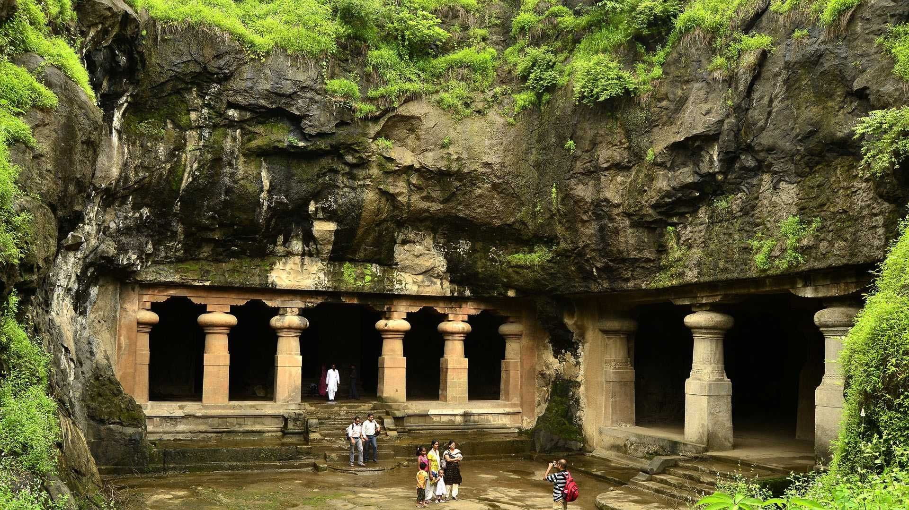
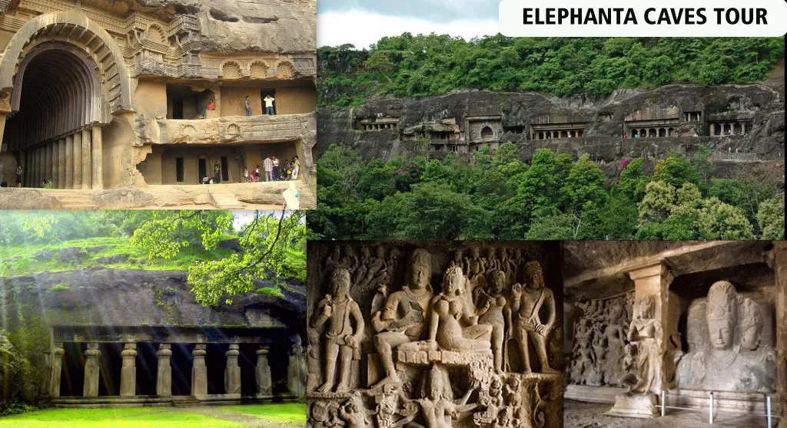
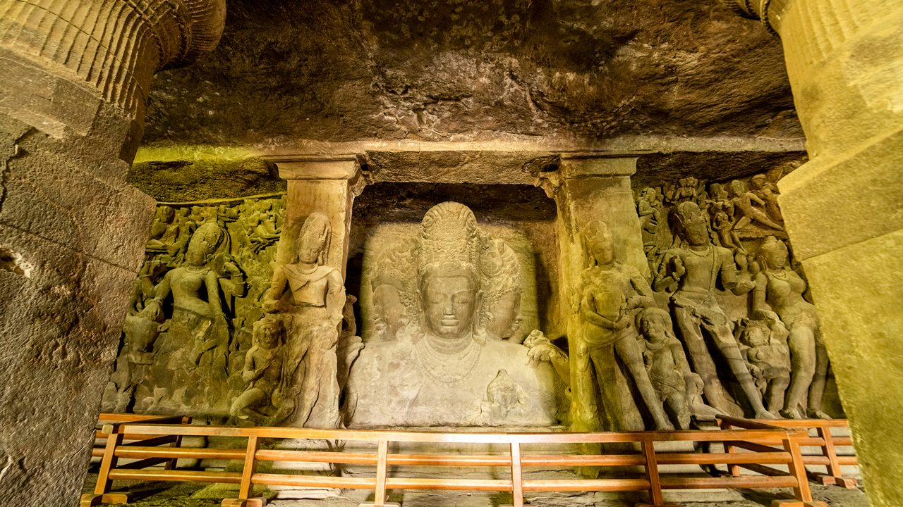
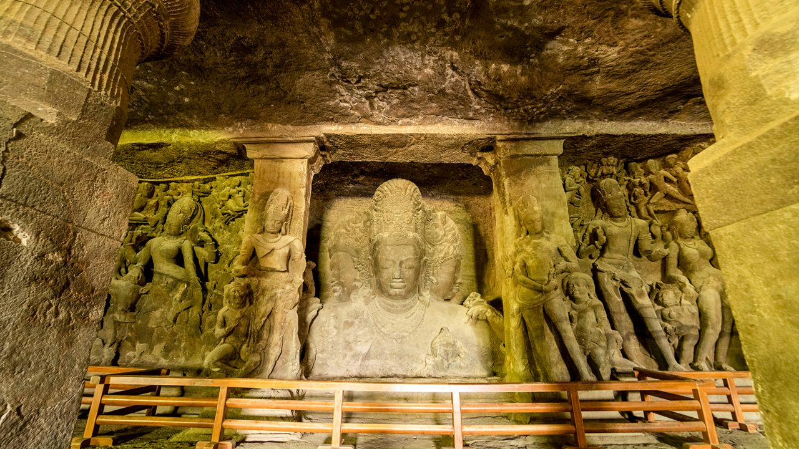
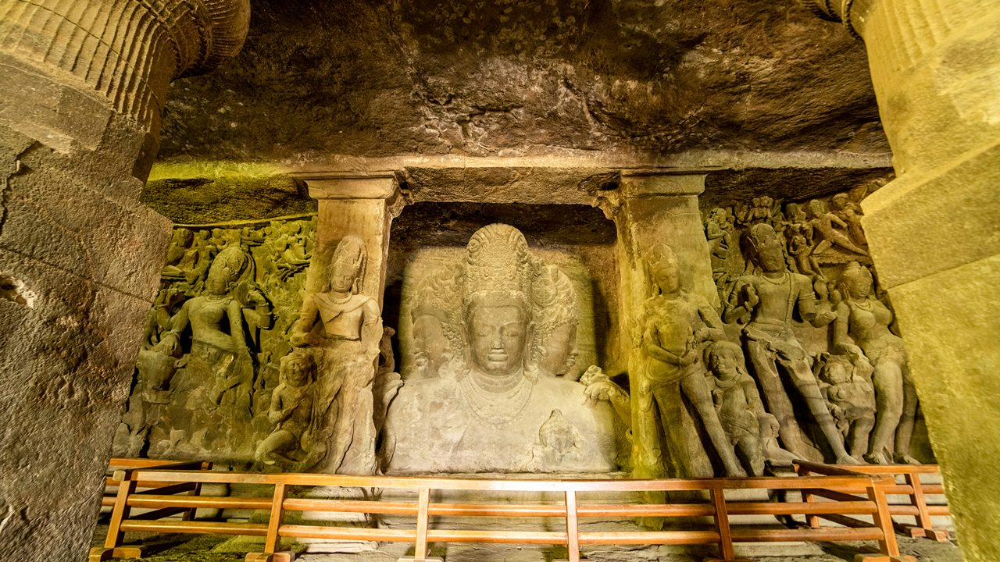

Explore Elephanta Caves


 


🏞️ Overview
Elephanta Caves are located on Elephanta Island, about 11 km from Mumbai. These rock-cut caves are known for their stunning sculptures and are a UNESCO World Heritage Site.
🕉️ Religious Importance
The caves are primarily dedicated to Lord Shiva, featuring the famous Trimurti – a three-headed sculpture representing his creator, preserver, and destroyer forms.
🗿 History
Believed to date back to the 5th to 8th centuries, the caves were carved from solid basalt rock. Portuguese explorers named the island after finding a large elephant statue near the shore.
🛥️ How to Reach
You can reach Elephanta Island by ferry from the Gateway of India. The journey takes about an hour and offers a scenic view of the Mumbai harbor.